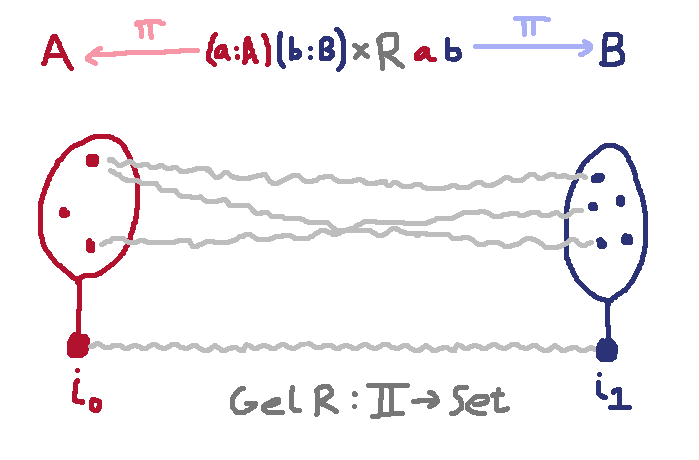
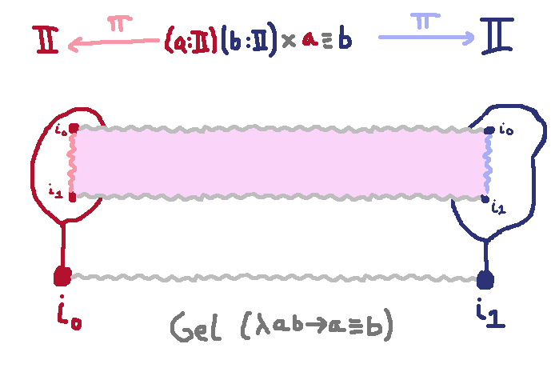
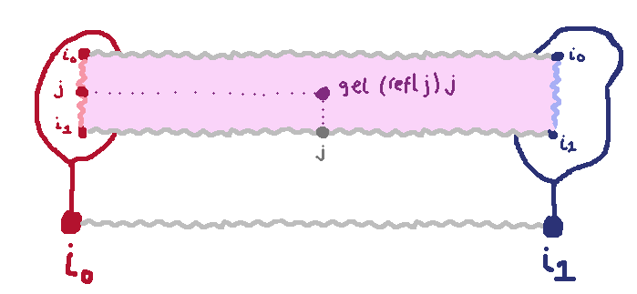
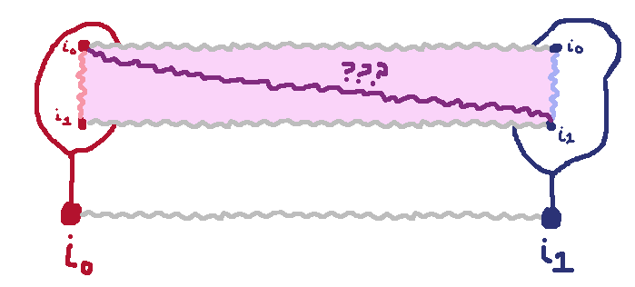

An Exciting Internalized Parametricity Gotcha
Since the
last couple posts
I've been getting excited about actually maybe understanding some of
the recent research on the general theme of directed programming,
specifically internalized parametricity, which I think is a crucial,
foundational part of it. (side note: why do I believe internalized
parametricity counts as directed programming, even if the bridge
relation is reversible? because of the directedness from the relation
itself to its arms)
Anyway C.B.
and Evan
have been a huge help lately in explaining their work and answering my
questions. The latest step in my own understanding is finally appreciating a
little better the motivation for substructurality in Evan's thesis.
That is,
What goes wrong if you can
use variables of type $\I$ unrestrictedly instead of affinely?
The point of this note is mostly to exposit my digested version of the answer to this question,
for my own benefit if nothing else.
The Problem
Let's get to the point. Here's a toy version of the machinery I care about, and a counterexample that can be derived from it:
{-# OPTIONS --rewriting #-}
open import Agda.Builtin.Equality
open import Agda.Builtin.Equality.Rewrite
module counterexample where
postulate
I : Set
i0 i1 : I
module _ {ℓ : Agda.Primitive.Level} {A B : Set ℓ} (R : A → B → Set ℓ) where
postulate
Gel : (i : I) → Set ℓ
Gel0 : Gel i0 ≡ A
{-# REWRITE Gel0 #-}
Gel1 : Gel i1 ≡ B
{-# REWRITE Gel1 #-}
gel : {a : A} {b : B} → R a b → (i : I) → Gel i
gel0 : {a : A} {b : B} (r : R a b) → gel r i0 ≡ a
{-# REWRITE gel0 #-}
gel1 : {a : A} {b : B} (r : R a b) → gel r i1 ≡ b
{-# REWRITE gel1 #-}
ungel : (g : (i : I) → Gel i) → R (g i0) (g i1)
I-collapse : i0 ≡ i1
I-collapse = ungel _≡_ (λ i → gel _≡_ (refl {x = i}) i)
We postulate that there is an interval type $\I$ with two points $i_0,i_1$.
By introducing $\mathtt{Gel}$ we assume that every relation can be converted to a bridge
in the universe.

Looking at this picture it's intuitively plausible that every global element of the gel-type lying over $\I$
has to uniquely correspond to some line drawn between related elements of $A$ and $B$, i.e. a point of the relation $(a :A)(b:B) \x R\ a\ b$. But — and this is a key thing
that I feel like I just gained a new appreciation for — this is only true if $A$ and $B$ are bridge-discrete.
That is, $A$ and $B$ don't themselves have any maps $\I \to A$ or $\I \to B$ that don't factor $\I \to 1 \to A$ or $\I \to 1 \to B$, respectively. If they aren't then there will be extra global elements that didn't come from points of the relation.
Let's imagine the simplest case where that's not true: where $A$ and $B$ are both themselves the interval $\I$. We could
then take as the relation the identity relation $(a :\I)(b: \I) \to a \equiv b$.

Now the gel introduction rule lets us convert any $i: \I$ and any point in the relation to an element of the gel type.
So in particular, if we have $j : \I$, we can convert the point in the interval that is the arm of the relation,
(i.e. letting it be the vertical coordinate in the diagram) at the point in time as we proceed across the relation
that is also $j$ (i.e. letting it be the horizontal coordinate in the diagram).

So we've described the diagonal
across the square, which would be fine and normal and good...
 except that $\mathtt{ungel}$
promises us that any global element over $\I$ can be hoisted back to
the relation. And our diagonal would therefore mean that the relation
holds between its endpoints $i_0$ and $i_1$. And since the relation is
the identity relation, it would mean $i_0 \equiv i_1$!
Conclusion
So this is a sufficiently small example of why substructurality shows up in Cavallo's
(and indeed also in Moulin's)
work that I can actually comfortably fit in my brain.
Still, since I guess my whole aesthetic in terms of type theories is embracing substructurality by compiling it away,
I wonder if the core idea of Bernardy-Moulin's Type Theory in Color approach could be resuscitated here fruitfully,
retaining the "postulate a bag of useful postulates in agda" quality which I am so fond of.
What I have in mind isn't totally clear to me yet — although quite possibly someone's already been down this road —
but I imagine refining the interval
by saying that there is a type of directions (= "colors")
\[\D : \rset\]
and then indexing the interval type over that
\[\I : \D \to \rset, i_0\ i_1 : (d : \D) \to \I\ d\]
and asserting for any set that there is a direction that it is path-discrete for
\[\_\#\_ : \rset \to \D \to \rset\]
\[A \# d = \hbox{(every map $d \to A$ factors through $1$)}\]
\[mkDisc : (A : Set) \to (\Sigma\ \D\ (\lambda d \to A\# d))\]
Hmm actually I imagine you'd have to be sensitive to universe levels, and say $\D_n : \rset_{n+1}$,
and
\[mkDisc : (A : Set_n) \to (\Sigma\ \D_n\ (\lambda d \to A\# d))\]
For you could try to sum all intervals
\[ \Sigma\ \D_n\ \I \]
This type has the property that there does not exist a $d \in D_n$ such that $( \Sigma\ \D_n\ \I) \# d$.
But fortunately it belongs to $\rset_{n+1}$ not $\rset_n$, so
we're allowed to reach for the next higher $\D_{n+1}$ to find a $d$ such that $( \Sigma\ \D_n\ \I) \# d$.
If you set up all that carefully, then maybe you could add a restriction to $\mathtt{ungel}$
so restrict it to types that were already known to be path-discrete for the interval type involved.
And since every type has some interval type for which it's path-discrete, then we still
might hope for universally applicable parametricity free theorems.
What becomes of relativity theorems? I think you could still get fairly strong equivalences between bridges
in certain subsets of the universe and relations.